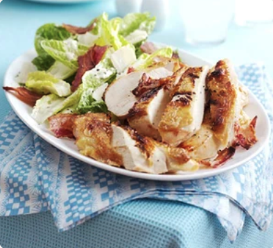

Quick Ceasar Salad with Roast Chicken & Bacon

A Speedy Take on an Old Classic
Turn this favourite salad into a speedy midweek meal with slices of bacon-wrapped chicken
Ingredients
- 4 chicken breasts
- 2 Slices of Smoked Bacon
- 8 slices streaky bacon
- 1 garlic clove (crushed)
- juice ½ lemon
- 3 tbsp olive oil
- 50g parmesan (plus extra to serve)
- Worcestershire sauce (optional)
- 2 small romaine lettuces
Method
- Heat oven to 200C/180C fan/gas 6. Season the chicken and place in a snug roasting tin. Drape the bacon around the chicken and roast for 15-20 mins until the bacon is crisp and the chicken just cooked through.
- In a bowl, mix the garlic, lemon juice, yogurt, oil and Parmesan, adding a dash of Worcestershire sauce, if you have any in the cupboard. Discard the outer leaves of the lettuce and tear the rest over a platter, mixing gently with the dressing. Serve with the chicken and crisp bacon, shaving over extra Parmesan, if you like.
Home